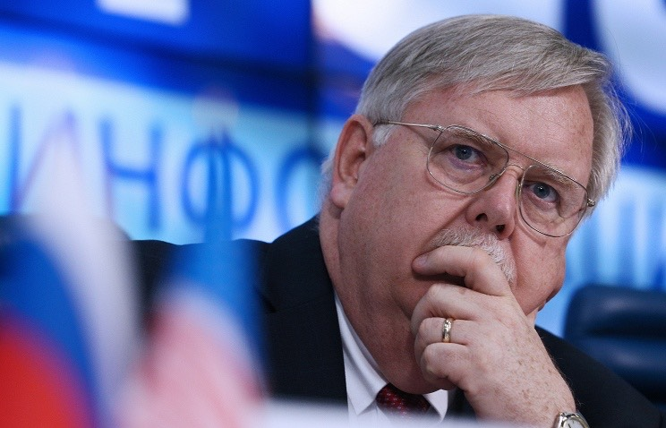
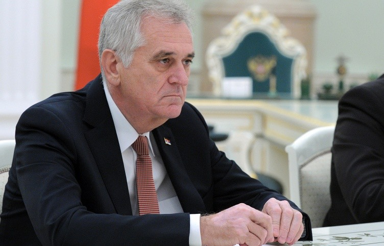

December 4 | 17:57 ⎯ October 31 | 10:37

The US
ambassador said in a statement he was "deeply troubled" by the decision
that was announced by Russia’s Prosecutor-General’s Office earlier on
Friday
Washington voices concerns over Russia’s move to declare US foundation ‘undesirable’
December 04, 17:57
Ukraine concentrates military groupings on border with Crimea, Transdniestria — Poroshenko
December 04, 17:48
Moldova and Ukraine try to block Transdniestria — region's acting foreign minister
December 04, 15:46
Georgian president revokes Mikheil Saakashvili of citizenship
December 04, 14:46
Turkey ready for dialogue with Russia — PM
December 04, 13:47
China supports Russia’s actions in Syria — foreign ministry
December 04, 10:57
Court in Tajikistan sentences 7 Islamic State supporters
December 04, 10:53
Japan's Defense Ministry collecting data on Russian construction activity on Kuril Islands
December 04, 9:48
Russian foreign minister, EU’s Mogherini agree to cooperate on Libyan settlement
December 03, 18:51
Turkish PM says ready to share data with Russia on jet shoot-down
December 03, 17:25
Georgia's ex-president ready to expose Ukraine’s plundering schemes
December 03, 17:06
"Frozen conflicts" pose serious threat to common security — Serbian foreign minister
December 03, 16:59
Around 40 units of equipment moved to contact line in Donbas — DPR defense ministry
December 03, 16:20
Georgian Justice Ministry suggests stripping former president Saakashvili of citizenship
December 03, 15:27
Turkish prime minister to make official visit to Azerbaijan
December 03, 8:28
More than 40 foreign ministers expected at OSCE conference in Belgrade
December 03, 8:23
Russia’s Defense Ministry exposes three routes of illegal oil transportation to Turkey
December 02, 18:58
Mass protests in Transdniestria against outcome of parliamentary polls
December 02, 16:02
Russian Defense Ministry to reveal data on Syrian gunmen training in Turkey next week
December 02, 15:47
Russia'a airstrikes cause twofold decline in IS oil production in Syria — general
December 02, 15:25
Islamic State’s pilots are trained in Libya — media
December 02, 13:46
NATO resumes contacts with Russia — Stoltenberg
December 02, 11:52
Transdniestria in turmoil as protesters demand review of parliamentary vote results
December 02, 9:57
Deployment of troops in Iraq without country’s approval unacceptable — PM
December 02, 8:22
US ready to cooperate with Russia while supporting allies in Europe as well - Pentagon
December 02, 7:20
US continues to insist that Russia violates INF Treaty
December 02, 5:19
Assad accuses Saudi Arabia and Qatar of financing terrorists through Turkey
December 02, 4:11
Hybrid attacks may trigger NATO's collective defense article, says Stoltenberg
December 02, 3:03
Bomb in Istanbul planted in car parked near metro station
December 01, 21:20
Protesters of Moldova’s unification with Romania hold rally in Chisinau
December 01, 20:01
Russian ship-Turkish submarine encounter purely casual — source
December 01, 19:49
Powerful explosion goes off in Istanbul, one persons dead, says TV channel
December 01, 19:13
Egyptian ambassador to Russia hopeful Russian aircraft flights to Egypt will be resumed
December 01, 18:27
Ukrainian MP accuses Saakashvili of extortion, racketeering in Odessa
December 01, 17:12
Kiev accused of redeploying tanks, multiple rocket systems to line of contact
December 01, 16:49
African migrants caught fleeing to EU via Russia’s westernmost region
December 01, 16:42
Berlin won't share IS intelligence data with Russia but will coordinate flights — minister
December 01, 16:09
Media report shelling of Donetsk outskirts
December 01, 11:45
Ukraine Security Service: Kiev ready to hold "all for all" prisoner exchange at any moment
December 01, 10:29
Azerbaijan launches special operation in Baku suburb following clashes with Islamists
December 01, 10:18
Assad says he favors idea of holding Syrian settlement talks in Prague — media
December 01, 8:32
Erdogan says ready to resign if claims about Turkey's buying oil from IS are confirmed
November 30, 22:12
Air France plane makes emergency landingin Russia due to emergency on board
November 30, 20:48
RT reporter teargassed in Turkey while covering Kurdish protest — TV
November 30, 18:32
Ukrainian army redeploys 277 tanks, heavy artillery pieces to contact line — DPR
November 30, 16:18
Poroshenko calls for visa-free regime with EU and extension of sanctions against Russia
November 30, 16:10
Russia, Turkey should jointly punish those behind Su-24 jet downing — Kazakh leader
November 30, 10:41
Nazarbayev says Kazakhstan becomes full-fledged WTO member, warns of ‘challenging time’
November 30, 9:59
Ukrainian military shell Donetsk chemical plant night on Monday
November 30, 9:59
Islamic State is political wrap for heavy oil smuggling — Russian official
November 30, 8:58
French President Hollande to open UN climate change conference in Paris
November 30, 8:57
EU foreign policy chief to discuss Russian jet downing with Minister Lavrov in Paris
November 29, 18:50
Turkish warplane delivers body of pilot of downed Su-24M bomber to Ankara
November 29, 17:50
Turkey to give body of Russia's Sukhoi Su-24M bomber pilot to Russian diplomats on Sunday
November 29, 12:48
Representatives of 12 countries discuss progress in MH17 crash probe
November 29, 4:14
November 28 | 15:59 ⎯ October 31 | 10:37

OSCE conf giving Russia, Turkey chance to straighten out relations — Serbia's President
Tomislav Nikolic believes that the first step should be made by Ankara, because the incident occurred through its fault
Syria FM says incident with Russian plane act of aggression against Syria's sovereignity
Walid Muallem says Syria is suffering from "Erdogan’s sights on the northern part of Syria and non-stopping support for the Islamic State, Jebhat al-Nusra and other terrorist groups"
Islamic State gunmen receive weapons from Turkey — Syria FM
The Syrian minister said he hoped cooperation between Russia’s Aerospace Forces and the Syrian army "will put an end to Erdogan’s dreams and ambitions"
Italian lawmaker points to necessity of Russian participation in anti-IS efforts
Anti-terrorist efforts were a central topic of the seminar of the NATO Parliamentary Assembly’s special group on the Mediterranean and Middle East regions
Aerospace Force's mission in Syria more effective than American - press secretary
November 28, 15:59
OSCE conf giving Russia, Turkey chance to straighten out relations — Serbia's President
November 28, 3:03
Lavrov: List of terrorist organizations will allow to decide on who Syrian opposition is
November 27, 18:54
Lavrov says Russian embassy in Damascus again shelled Nov 23
November 27, 15:59
Politician warns Ukraine will face huge losses, job cuts due to ban on exports to Russia
November 27, 18:32
Russian lower house speaker blames PACE for events in Ukraine
November 27, 14:56
No power supply to Crimea though one of Ukraine's power lines repaired — Russian ministry
November 27, 14:43
Kiev’s military shell Donetsk airport — DPR defense ministry
November 27, 14:33
Islamic State gunmen receive weapons from Turkey — Syria FM
November 27, 19:19
Italian lawmaker points to necessity of Russian participation in anti-IS efforts
November 27, 18:38
Syria FM says US should study rumors Erdogan’s son is involved in oil trade with IS
November 27, 17:25
Syrian army makes considerable progress thanks to Russian air support — Syrian FM
November 27, 15:07
UN appoints Filippo Grandi as next high commissioner for refugees
November 18, 21:00
Rules of passage into Norway via Russia unchanged for refugees after French terror attacks
November 16, 20:38
Putin hopeful G20 will adopt document on terrorism and refugee crisis
November 13, 17:27
Restoring peace and security to Syria will help solve refugee crisis — Russian diplomat
November 09, 16:39
Protests against electricity price hikes continue unabated in Moldova
November 11, 16:29
Moldova’s pro-European parties agree to revive coalition without Liberal Democrats
November 10, 9:03
Moldova’s Liberal Democrats refuse to form coalition with Democrats
November 05, 8:59
Moldova’s parliament dismisses cabinet led by Valeriu Strelet
October 29, 16:39
Russian Airbus A321 crash in Egypt
Egypt is among Russia’s leading partners in Arab world, says defense minister
November 25, 5:36
Egypt allows Russian specialists take part in control procedures at its airports
November 24, 18:10
Three-quarters of Russians support ban on flights to Egypt
November 23, 10:59
Investigation into terror act downing A321 can take long — Kremlin
November 20, 12:56
16 detained in special operations in Belgium — prosecutors
November 23, 8:54
Russia to send police pup to France after dog killed in Paris siege
November 20, 18:31
Russian journalists attacked in Belgium do not seek help from Russian embassy
November 19, 13:19
Russian TV crew attacked in Belgium
November 19, 11:29
Russia to maintaint competitiveness on oil market even if oil prices remain low
November 16, 13:43
US may ratify IMF reform by end of 2015 — Russian Finance Minister
November 16, 13:14
Russia to finance 2 projects worth $2 bln in Iran — Finance Minister
November 16, 12:58
Putin, Cameron point to need to jointly combat terrorism
November 16, 11:59
All TASS News
Erdogan confirms he wants to hold talks with Putin
November 27, 16:54
Almost 4,000 citizens of Donetsk republic killed in Donbas conflict — ombudsman
November 27, 12:53
Russia to send two humanitarian convoys to Donbas next month
November 27, 12:20
Donetsk suburb shelled by Kiev forces overnight — DPR ministry
November 27, 11:54
Syrian government army may join anti-IS fight on ground — French foreign minister
November 27, 11:43
Thailand deports three Russians wanted by Interpol
November 27, 10:48
Sanctions against Russia to be lifted only if Minsk deal implemented — Fabius
November 27, 10:42
Turkey vows ‘measures’ if its jet downed when violating Syrian airspace
November 27, 9:29
Assad cannot play any role in Syria’s future - Hollande
November 27, 3:26
Russia should play one of leading parts in Syrian settlement, says Hollande
November 27, 3:18
Lack of Kiev’s control over battalions aggravate Donbass situation - DPR delegation chief
November 27, 3:10
OSCE: Ukraine's Shirokino, Gorlovka and Donetsk airport turn into trouble spots again
November 26, 17:33
Kiev forces accused of redeploying almost 40 tanks to Donbas disengagement line
November 26, 15:38
Ukrainian army continues moving military hardware to Donbas contact line — militia
November 26, 13:55
Russian convoys deliver humanitarian aid to eastern Ukraine
November 26, 12:55
Crimean blockade activists again prevent power line repairs
November 26, 12:21
Turkey makes big mistake by downing Russian jet — Iranian parliament speaker
November 26, 12:00
Tokyo counts on Russia’s assistance in dealing with aftermath of Fukushima accident
November 26, 10:49
Kiev forces shell railway station in Donetsk republic
November 26, 10:27
Russian humanitarian convoy sets off for Donbass
November 26, 5:07
Italian foreign minister says Russia’s role important for political settlement in Syria
November 26, 4:27
US imposes sanctions against World Chess Federation chief for support to Syrian government
November 25, 21:46
Kerry offers condolences over Turkey's downing of Russian warplane
November 25, 21:00
Ukraine's Right Sector nationalists deploy battalion near contact line — militia
November 25, 20:24
Syria FM: Armed opposition cannot be called moderate after killing of Russian pilot
November 25, 20:08
Eighteen Turkish fighter jets patrolled border with Syria — Turkey's General Staff
November 25, 17:12
Afghanistan supports creation of antiterrorist coalition — Afghan lawmaker
November 25, 14:55
Proceedings of ex-Yukos shareholders vs Russia going according to schedule
November 25, 9:32
Syrian top diplomat to discuss fight against IS, political process during visit to Moscow
November 25, 8:42
Copter brought down by Taliban fighters was not part of UN mission — UN deputy spokesman
November 25, 8:32
UN General Assembly urges Moscow conference on Palestine-Israel settlement
November 25, 5:52
Norwegian minister urges Russia-Turkey direct dialogue on downed warplane
November 25, 5:11
Reuters: US believes Russian jet was hit inside Syrian airspace
November 25, 4:20
Anti-corruption group set up in Ukrainian parliament
November 25, 4:09
Turkish, US presidents discuss downing of Russian warplane by Turkey
November 25, 3:17
NATO: diplomacy, calm, de-escalation required to address Su-24 incident
November 24, 23:46
Turkey's attack provocation to split int’l anti-terrorist coalition — French politician
November 24, 22:40
Turkey’s attack on Russian warplanes proves Turkey is backing terrorists — Syrian military
November 24, 21:00
German foreign minister afraid of problems in Syria talks after Su-24 downing by Turkey
November 24, 20:52
Swedish foreign affairs minister concerned about incident with Russia’s jet in Syria
November 24, 20:27
Egypt allows Russian specialists take part in control procedures at its airports
November 24, 18:10
Czech Foreign Minister urges international anti-terrorist strategy agreement
November 24, 17:47
Czech president denounces Turkey’s actions over Russian bomber crash
November 24, 16:06
Ukrainian army concentrating equipment, personnel at contact line — LPR militia
November 24, 14:18
Russian journalists came under fire in Syria, three injured — Defense Ministry
November 24, 12:13
Media: Warplane that crashed in Syria was downed by Turkish air force | November 24, 10:48
OSCE coordinator says Kiev should pay pensions to residents of east Ukraine conflict zone
November 24, 9:13
Interpol rejects Ukrainian queries to place former administration officials on wanted list
November 24, 6:12
DPR defense ministry: Ukrainian military shell Donetsk western outskirts
November 24, 3:42
Source: Russia to complete removal of enriched uranium from Iran by yearend
November 23, 21:38
Iran’s supreme leader: Any decision on Syria requires consent of its people and rulers
November 23, 20:29
German Foreign Ministry considers blowing up of powerline towers in Ukraine criminal act
November 23, 17:08
Ukrainian interior minister confirms risk of terrorist attacks in Kherson region
November 23, 16:53
Ukrainian forces violate ceasefire regime in DPR 23 times over past 24 hours
November 23, 15:55
Donetsk republic regards power line blasts in Ukraine as act of terror
November 23, 15:16
European Commission official comments on Juncker's letter to Putin
November 23, 14:47
Сhina considers Russia’s actions important part of international fight against terrorism
November 23, 14:12
Russian air strikes against IS encourage volunteers to join Syrian self-defense
November 23, 13:54
Ukrainian army shells Spartak, Gorlovka, Shirokino in Donetsk republic — media
November 23, 12:45
Opposition candidate leading in Argentina presidential elections — election commission
November 23, 8:59
16 detained in special operations in Belgium — prosecutors
November 23, 8:54
Ukraine turns down Russia’s help in electricity supplies resumption - source
November 22, 16:56
Syrian president: Syria situation improves after Russia’s air strikes against terrorists
November 22, 15:25
UN chief praises Russia’s role in fight against terrorism
November 22, 12:35
Russian survivors of Mali hotel attack stay at heavily guarded airport
November 21, 20:50
Key suspect of Paris terrorist attacks worked in Brussels subway
November 21, 15:54
Syrian warplanes hit 447 terrorist targets since Nov 15 — Syrian army general
November 20, 21:52
Syrian commander: Russian airstrikes play decisive role in government forces' achievements
November 20, 21:23
Belarus leader wants to see heads of former Yugoslav republics in Minsk in 2016
November 20, 21:12
Source: UN Security Council may vote on French draft resolution on anti-IS fight on Friday
November 20, 20:30
Poroshenko says all EU parliaments have ratified agreement on association with Ukraine
November 20, 20:04
Syria terrorists losing over $1 mln daily under Russian airstrikes — defense minister
November 20, 18:51
Russia does not have exact information on Russian presence at Mali hotel — Kremlin
November 20, 17:47
About 10,000 natives of post-Soviet countries fight on IS side — Syrian ambassador
November 20, 15:44
Ukrainian Defense Ministry has no information on terrorists’ weapons purchases in Ukraine
November 20, 14:11
Blockade of Crimea may trigger further hike of tensions, says OSCE commissioner
November 20, 2:47
Canada, US, Ukraine vote against UN resolution condemning glorification of Nazism
November 20, 2:04
IS leaders fleeing Raqqa under Russian bombs — media
November 19, 21:30
Egypt fully understands Russia’s stance on A321 crash — president
November 19, 21:23
Ukraine initiates criminal proceedings against Serbian politicians for visiting Crimea
November 19, 20:36
Russian General Staff: IS commanders dump dead militants’ bodies in sewage
November 19, 20:20
Not all heavy armaments pulled back from disengagement line in Donbas — OSCE
November 19, 19:34
Russian general: Islamic State acknowledged elimination of 3 field commanders
November 19, 19:06
South Ossetia leader does not rule Georgians fighting alongside IS could get into republic
November 19, 18:00
APEC summit denounces terrorism in all its manifestations
November 19, 14:10
Lists of Syrian opposition for talks with Damascus provided by four countries
November 19, 13:14
No night shelling reported from Donetsk republic — local authorities
November 19, 11:56
Syrian people must decide Assad’s fate — opposition leader
November 19, 11:40
Russian TV crew attacked in Belgium
November 19, 11:29
Russian relief convoy arrives in embattled Donbas
November 19, 10:59
China’s Foreign Ministry confirms reports on murder of Chinese citizen by IS terrorists
November 19, 9:57
Assad: Syrians’ consensus needed for holding presidential election
November 19, 7:16
Terrorists seized in Saint Denis were preparing new terror attack — Paris prosecutor
November 18, 21:35
UN appoints Filippo Grandi as next high commissioner for refugees
November 18, 21:00
IS may be planning new terror attacks in Europe — German interior minister
November 18, 19:22
Residential building in Donetsk suburb on fire after mortar shelling — media
November 18, 17:29
UK appoints new ambassador to Russia
November 18, 15:48
Egypt supports use of Russia's long-range aviation, Navy in Syria operation —Kremlin
November 18, 14:52
Japanese government expresses support for Russia over terror act on board A321 jet
November 18, 8:50
Transdniestria says its relations with Chisinau keep on deteriorating
November 17, 21:27
Contact Group on Ukraine urges all parties to conflict in Donbas to cease fire — OSCE
November 17, 21:09
Egypt PM certain Russian aircarft crash in Sinai won't affect relations with Russia
November 17, 19:22
Syrian army liberates 80 populated localities from militants — Russian General Staff
November 17, 19:07
China strongly condemns inhuman actions of terrorists in A321 crash in Egypt
November 17, 16:59
Egypt airport may face multi-million-dollar lawsuits after Russian plane crash — lawyer
November 17, 14:54
Russia, France to pool efforts to counter terrorism — French ambassador
November 17, 14:06
Hollande will go to Moscow and Washington for anti-terror talks next week — French PM
November 17, 13:41
Egypt denies detention of airport staff in connection with Russian jet crash
November 17, 13:40
DPR defense ministry reports Kiev troops shelling Donetsk outskirts, airport
November 17, 10:58
Report: Deaths from terrorism figures reach highest level ever in 2014
November 17, 9:58
Conference on prospects for resumption of EU-Russia ties to be held in European Parliament
November 17, 8:25
Iran’s Foreign Ministry: Terrorism sponsors to bear responsibility for Paris tragedy
November 16, 21:10
Powerful earthquake hits Russia's Kuril islands
November 16, 21:05
Rules of passage into Norway via Russia unchanged for refugees after French terror attacks
November 16, 20:38
French leader to shortly meet with Obama, Putin to discuss action against IS
November 16, 20:03
Paris will host UN climate change conference despite terror attacks — president
November 16, 19:30
Powerful blast heard in the zone of a police operation in Brussels
November 16, 15:30
Donetsk republic reported 80 ceasefire violations by Kiev troops over past week
November 16, 15:17
Ukrainian military shells Donetsk — administration
November 16, 9:58
Timeframe of Putin’s visit to Japan not determined — Japanese chief cabinet secretary
November 16, 8:59
Voter turnout at Ukraine’s runoff local elections reach 34% - observers
November 16, 3:08
Poroshenko says EU will finance demining works in Donbas
November 15, 21:55
Russian national detained in Moldova on suspicion of organizing separatist movement
November 15, 20:43
Kiev pulls about 100 units of military hardware to engagement line in Donbas — DPR
November 15, 18:39
Campaign against Minsk peace accords continues in Ukraine
November 15, 17:59
Poroshenko confirms having information on possible attacks of Islamists staying in Ukraine
November 15, 16:36
Iraq warned France, US, Iran about possible terror attacks — FM
November 15, 16:30
East Ukraine's Donetsk comes under tank fire — DPR defense ministry
November 15, 16:19
G20 Leaders Summit kicks off in Turkey’s Antalya
November 15, 16:09
Ukrainian military fire 42 mines on Donetsk airport overnight - DPR source
November 15, 10:44
Dnepropetrovsk replaces election commission head at night ahead of elections
November 15, 9:39
Runoff municipal elections to take place in Ukraine
November 15, 1:47
October 31, 2015 | 10:37 ⎯ November 15 | 15:04
Poroshenko says EU will finance demining works in Donbas
According to the Ukrainian president, up to 90% of human losses in eastern regions occurred due to "stepping onto mines"
Russian national detained in Moldova on suspicion of organizing separatist movement | http://tass.ru/en/world/836633 | Activists of the Ukrainian organization Popular Rada of Bessarabia announced plans to seek the establishment of the Budjak republic in October 2015
Kiev pulls about 100 units of military hardware to engagement line in Donbas — DPR | http://tass.ru/en/world/836619 | Ten helicopters, up to 40 tanks, 21 armoured vehicles and Grad multiple rocket launder systems were seen 13 kilometers off the line of engagement
Campaign against Minsk peace accords continues in Ukraine | http://tass.ru/en/world/836555http://tass.ru/en/world/836555 | Many speakers say it's unacceptable to agree with terms imposed on Ukraine, and which only two months earlier were proudly referred to as "Poroshenko’s Plan" of settling the crisis in Donbas
Chechen leader meets with representatives of Syria’s internal opposition
November 15, 21:31
Russia offered to US to discuss operation in Syria but no reply followed, says Lavrov
November 14, 21:01
Multi-party ministerial talks on Syria end in Vienna
November 14, 19:49
Russian Foreign Ministry warns against early conclusions after terrorists attacks in Paris
November 14, 11:36
Poroshenko says EU will finance demining works in Donbas
November 15, 21:55
Russian finance minister: Kiev’s stance on its $ 3bln debt to Russia unacceptable
November 15, 21:22
Kiev pulls about 100 units of military hardware to engagement line in Donbas — DPR
November 15, 18:39
Campaign against Minsk peace accords continues in Ukraine
November 15, 17:59
Chechnya’s head confident terrorist attacks in Paris organized by IS
November 14, 8:52
Syrian Orthodox Church’s supreme head supports Russia’s operation against IS — MP
November 13, 21:50
Russian upper house speaker calls to invigorate Russia-Lebanon anti-terrorism efforts
November 13, 19:59
Russian Defense Ministry denies reports of S-400 missile systems in Syria
November 13, 17:01
Putin hopeful G20 will adopt document on terrorism and refugee crisis
November 13, 17:27
Restoring peace and security to Syria will help solve refugee crisis — Russian diplomat
November 09, 16:39
Afghans replace Syrian in refugee flow to Norway through Russia
November 09, 16:28
Almost 200 Middle East refugees crossed from Russian to Norway on November 4
November 05, 17:22
Protests against electricity price hikes continue unabated in Moldova
November 11, 16:29
Moldova’s pro-European parties agree to revive coalition without Liberal Democrats
November 10, 9:03
Moldova’s Liberal Democrats refuse to form coalition with Democrats
November 05, 8:59
Moldova’s parliament dismisses cabinet led by Valeriu Strelet
October 29, 16:39
Russian Airbus A321 crash in Egypt
Charlie Hebdo caricatures new manifestation of Russophobia — Serbian ambassador to Russia
November 13, 21:42
Egypt Air received notification on suspension of flights to Moscow
November 13, 21:31
Russian airline executive rules out metal fatigue as cause of Sinai jet crash
November 13, 19:49
Aeroflot suspends air service with Egypt from December 1, 2015 to March 27, 2016
November 13, 18:40
Lavrov: Terror attacks in Paris require united anti-terror front
November 15, 17:12
Iraq warned France, US, Iran about possible terror attacks — FM
November 15, 16:30
Death toll in Paris terror attacks stands at 129, another 352 wounded - Paris prosecutor
November 14, 23:53
Security at Russian stadiums to be tightened over Paris attacks - sports minister
November 14, 22:31
News of the World
Poroshenko confirms having information on possible attacks of Islamists staying in Ukraine
November 15, 16:36
East Ukraine's Donetsk comes under tank fire — DPR defense ministry
November 15, 16:19
G20 Leaders Summit kicks off in Turkey’s Antalya
November 15, 16:09
Ukrainian military fire 42 mines on Donetsk airport overnight - DPR source
November 15, 10:44
Dnepropetrovsk replaces election commission head at night ahead of elections
November 15, 9:39
Runoff municipal elections to take place in Ukraine
November 15, 1:47
EU should lift sanctions from Russia, jointly battle terrorism, says Italian politician
November 14, 18:39
Fabius leaves talks on Syria to return to Paris
November 14, 16:15
Death toll in terrorist attacks in Paris is 127 — media
November 14, 11:49
French foreign minister to participate in Vienna meeting on Syria
November 14, 11:14
Iran’s president cancels trip to Europe after terrorist attacks in Paris
November 14, 10:50
CIS leaders condemn terrorist attacks in Paris
November 14, 10:43
Death toll in Paris terrorist act may exceed 120 — Paris prosecutor
November 14, 8:48
French authorities send 1,500 troops to Paris — Elysee Palace
November 14, 8:45
Hollande cancels trip to G20 summit in Turkey over terrorist attacks in Paris
November 14, 3:45
At least 100 killed in Paris concert hall terrorist attack — media
November 14, 3:35
France mobilizes all possible means to neutralize terrorists — Hollande
November 14, 2:36
At least 60 killed in shooting, explosions in Paris — media
November 14, 2:08
Ukrainian prosecutors institute cases against 7 Rada deputies from Radical Party faction
November 14, 0:03
Ukraine bans users of Russian domains from voting at presidential website
November 13, 20:49
Ukraine may ban extradition of foreigners who fought in Donbas
November 13, 20:33
Intensified shelling in Donetsk republic to be discussed in Minsk — DPR envoy
November 13, 14:34
Iran will be represented by deputy FM at talks on Syria in Vienna — embassy
November 13, 12:35
OSCE official concerned with escalation of violence in Ukraine, calls for restrain
November 13, 12:04
East Ukraine militia source claims Kiev forces shelled school near Gorlovka
November 13, 10:42
Lebanese close ranks in face of new terrorist attacks
November 13, 10:34
Japan’s PM seeks to discuss peace treaty with Russian president at G20 summit
November 13, 8:33
Seoul ready for ‘any form of dialogue’ with Pyongyang — South Korean president
November 13, 8:32
US should ‘look for every opportunity’ to talk Syria future with Russia — US envoy
November 13, 8:23
Belgian authorities place armed military guards at Russian embassy’s entrance
November 12, 20:56
More than 1,100 tons of food delivered to troubled Donetsk, Luhansk
November 12, 18:21
Syrian opposition confirms Russia’s proposal on constitutional reform
November 12, 13:33
Monitoring center confirms Luhansk republic's compliance with all withdrawal commitments
November 12, 12:32
East Ukraine militia report shelling of Donetsk airport area
November 12, 12:21
Donetsk republic official claims subversive group cut off power to 2 villages
November 12, 11:32
Some 4,500 militants reported on post-Soviet bloc's external border with Afghanistan
November 12, 10:50
Last night was calm in Donetsk republic — local authorities
November 12, 10:08
Nine people killed in terrorist attack in North Sinai
November 12, 9:21
Reform of Ukrainian parliament planned for January — speaker
November 12, 8:30
Moldova interested in closer cooperation with NATO — parliament speaker
November 11, 22:05
Iraqi deputies call for stepping up coalition’s actions against IS in Iraq — MP
November 11, 22:00
Syrian army destroys dozens of militants in Homs and Hama provinces — general
November 11, 21:52
Resignation of Right Sector leader caused by conflict with Ukrainian authorities — expert
November 11, 21:48
Ukrainian troopers ordered to shoot to kill to protect their lives — Ukrainian president
November 11, 21:33
Egypt’s president calls not to jump to conclusions about causes of Russian plane crash
November 11, 19:52
Syrian troops on offensive south of Aleppo — media
November 11, 19:43
Syria’s Christians grateful to Russia for support in fight against terrorism — patriarch
November 11, 18:49
Protests against electricity price hikes continue unabated in Moldova
November 11, 16:29
Ukrainian border guards may open new checkpoints to Donbas
November 11, 15:30
Ukraine’s Sukhoi-25 jet crashed after hitting high-voltage power line — prosecutor
November 11, 15:19
Truce violated 10 times in Donetsk republic in the past 24 hours — defense ministry
November 11, 14:35
Russia blocks 450 digital wallets raising funds for terrorists
November 11, 13:49
Ukrainian attack aircraft crashes near city of Zaporizhia — Defense Ministry
November 11, 13:00
No night shelling reported from Donetsk republic, airport shelled early on Wednesday
November 11, 11:52
About 500 Kyrgyz citizens join terrorist groups in Syria
November 11, 11:28
Syria’s last chemical weapons production facility to be destroyed by year end — UN
November 11, 9:07
Subgroups on Syria to begin working in Vienna on Nov 11 — UN envoy
November 11, 8:36
Ukraine repeats request to UN to send peacekeepers to Ukraine — defense ministry
November 10, 20:17
Ukrainian foreign ministry asks OSCE to confirm full weapons withdrawal by militias
November 10, 18:52
Kuwait agrees with Russia on Syria and fight against terrorism — foreign minister
November 10, 17:28
Kiev redeploys two squadrons of combat helicopters to Donbas — DPR intelligence
November 10, 16:28
Law on Donbas special status should enter into force on election day — German FM
November 10, 15:50
Russia becomes most important actor in Middle East — Kuwaiti experts
November 10, 14:56
IS plans to create emirate in Afghanistan pose threat to Central Asia, Iran, China — FSB
November 10, 13:46
Russia monitors financial transfers to countries with active terrorist groups — prosecutor
November 10, 10:29
Ukrainian army tries to break into DPR positions near Debaltsevo — mayor
November 10, 10:16
Militia source claims Ukrainian forces shelled Donetsk airport for 9 hours
November 10, 9:14
Moldova’s pro-European parties agree to revive coalition without Liberal Democrats
November 10, 9:03
Russian Defense Ministry says militants in Syria change tactics
November 09, 21:42
OSCE mission confirms recent shelling of Donetsk from Grad rocket launchers
November 09, 21:11
Syrian general: More than 50 IS terrorists killed in fighting near air base in Deir ez-Zor
November 09, 20:24
Britain cannot share all information on A321 crash in Egypt — foreign affairs secretary
November 09, 20:20
Syrian Foreign Ministry calls US-led coalition’s bombings criminal aggression
November 09, 18:47
Armenia appreciates Russia’s efforts to resolve Nagorno-Karabakh conflict — FM
November 09, 17:23
UNESCO General Conference rejects membership for Kosovo
November 09, 16:57
Egypt has no deadlines for Russian specialists’ work at Flight 9268 crash site
November 09, 15:53
Patriarch Aphrem II of all East urges US to stop financing terrorists
November 09, 15:39
Ukraine's Tymoshenko considers results of local election falsified
November 09, 14:19
Ukrainian forces return heavy artillery to contact line in Donbas — DPR defense ministry
November 09, 13:35
China will take part in second ministerial meeting on Syria in Vienna on November 14
November 09, 11:26
More than 300 heavy industry companies in DPR resume production
November 09, 10:37
Opposition party leads in Croatia’s parliamentary election
November 09, 10:19
Early parliamentary elections may destabilize situation in Ukraine - parliament speaker
November 08, 18:27
Source: Russian side has no proof of explosion onboard Russian plane that crashed in Egypt
November 07, 6:30
Syrian army on offensive south of Aleppo - media
November 07, 6:21
Passenger flights to Egypt from Russia suspended - Russian transport minister
November 07, 6:07
Cairo understands Moscow’s decision to suspend air service — Egyptian minister
November 06, 21:10
Elections in Donbas should be held under Ukrainian laws — Ukraine FM
November 06, 20:19
Turkey confirms detention of two Russians on suspicion of ties with IS
November 06, 19:41
Luhansk republic envoy claims Kiev forces return withdrawn weaponry to contact line
November 06, 18:21
Lukashenko: Betting on seizing power in Belarus by "color revolutions" deemed to fail
November 06, 17:30
German FM says settlement process in Ukraine lags behind schedule
November 06, 16:59
UN: Donbas urgently needs humanitarian aid
November 06, 16:31
Belarus president opposed to reforms imposed from outside
November 06, 15:11
Lukashenko sworn in as Belarusian president for fifth term
November 06, 14:32
Ukrainian parliament coalition risks collapsing as another party may join opposition
November 06, 14:31
12 children from Donetsk to receive treatment in Russia
November 06, 11:42
Ukrainian forces shell Donetsk’s western outskirts from Grad systems — media
November 06, 11:28
Thailand deports four Russians placed on international wanted list
November 06, 10:59
Britain shuts down Sharm el-Sheikh flights after intelligence intercepts IS talks - media
November 06, 7:27
US authorities to tighten security at airports after A321 crash in Egypt - media
November 06, 6:29
Russian Emergencies Ministry’s plane with remains of A321 victims leaves Cairo
November 06, 6:26
Successes of Russian Aerospace Force in Syria enable refugees to begin return home
November 06, 5:29
Media: US President Obama says terrorism possible behind Russian passenger jet’s crash
November 06, 5:22
Almost 200 Middle East refugees crossed from Russian to Norway on November 4
November 05, 17:22
France refuses to comment on possibility of terrorist act onboard A321
November 05, 16:37
EAEU hopes to receive observer status at next UN General Assembly
November 05, 15:40
Ukrainian military shells northern outskirts of Donetsk — media
November 05, 12:58
In resolving Syrian crisis Russia does what France should be doing — Marine Le Pen
November 05, 12:44
Moldova’s Liberal Democrats refuse to form coalition with Democrats
November 05, 8:59
US doesn’t think Crimea’s reunification with Russia is fait accompli
November 05, 3:07
Britain cancels all flights to and from Egypt’s Sharm El Sheikh
November 05, 1:13
Presidential press service: Belarus president Lukashenko to take oath of office Friday
November 04, 23:57
Inspecting A321 fuselage, Russian rescuers retrieve remains of Sinai plane crash victims
November 04, 23:56
Bodies of 53 victims of Russian plane crash in Egypt identified
November 04, 23:52
IAC: data of A321 "black box" copied, handed to investigation for deciphering
November 04, 23:28
All crew members of Sinai plane crash identified
November 04, 23:26
Naftogaz CEO: Ukraine plans to buy "certain amounts" of gas from Russia until yearend
November 04, 23:22
26 instances of shelling registered in DPR over past day
November 04, 23:19
DPR leader: Kiev’s shelling makes truce in Donbass conditional
November 04, 18:55
Egypt’s president dismisses terror claims for Russian plane crash
November 04, 6:14
Egypt steps up pre-flight preparations after Russian plane crash - reports
November 04, 4:51
Egypt says no comment on causes of Russian plane crash until investigation is over
November 04, 2:11
Contact Group on Ukraine holding Skype talks
November 03, 19:48
Field works at A321 aircraft crash site to be completed Tuesday — Egypt’s minister
November 03, 19:17
Kiev accused of using Grad rocket launchers in night shelling of Donetsk
November 03, 18:06
Work to decode black boxes from crashed A321 begins in Cairo
November 03, 16:54
US actions in South China Sea may escalate tensions — Indonesian defense minister
November 03, 16:50
Egyptians checking fuel pumped into Russian plane’s tanks, food providers
November 03, 15:59
Donetsk republic may postpone weaponry withdrawal due to repeated shellings
November 03, 14:56
Kosovo can become corridor for radical Islam breaking into Europe — diplomat
November 03, 14:16
Serbia has no plans to join NATO — ambassador
November 03, 13:33
Donetsk republic insists on approving regulations in political subgroup — DPR envoy
November 03, 12:59
IAC neither confirms nor denies heat flash at the moment of A321 crash
November 03, 11:53
Ukrainian forces shell Donetsk and suburbs — media
November 03, 11:49
Hollande sends personal invitation to Putin to Paris summit on climate
November 03, 10:59
Experts find components that are not of the crashed A321 airliner — source
November 03, 10:59
Trial of Russian citizens Yerofeyev and Alexandrov opens in Kiev
November 03, 9:59
Russian citizen detained in Kyrgyzstan for calls for terrorism
November 03, 9:55
Russian businessman Viktor Bout's term in US prison extended for 40 days
November 03, 8:50
US satellite detects heat slash over Sinai at time of Russian jet crash
November 03, 7:09
Contact Group’s Skype conference to discuss worsening situation in Donbas
November 02, 20:34
Kiev accused of pulling 20 tanks, 6 artillery systems to engagement line in Donbas
November 02, 20:01
Poroshenko’s party fails to keep majority in Kiev legislature
November 02, 19:29
Search area at Sinai crash site expanded to 30 square kilometers
November 02, 16:35
A321 black boxes to be decoded in Egypt or in France — aviation authority
November 02, 16:28
Kiev shares Russia’s grief over Sinai plane crash
November 02, 15:45
Media: Egypt Air’s contract on maintenance of Kogalymavia aircraft expired 3 months ago
November 02, 15:41
Air carriers avoid flying over North Sinai — Flightradar
November 02, 15:33
Azerbaijan poll met world standards — European parliament group
November 02, 15:04
Unrecognized Donetsk republic accuses Kiev of violating ceasefire 16 times over 24 hours
November 02, 14:30
Black boxes retrieved from A321 plane’s crash site in Egypt in good condition — minister
November 02, 13:50
African Union offers condolences to families of Russian plane crash victims
November 02, 12:59
New fragments of fuselage found at Flight 9268 crash site in Egypt — Emergencies Ministry
November 02, 12:44
Ukrianian forces shell Veseloye settlement in DPR
November 02, 10:48
Resident of Donetsk injured in shellings by Ukrainian forces — local administration
November 02, 10:17
Iran starts implementing agreement on nuclear program
November 02, 9:19
Lawmaker: Oligarchs trying to remove Ukraine’s president to gain full control over country
November 02, 8:58
Ruling party winning parliamentary elections in Azerbaijan — election commission
November 02, 8:31
Russian A321 broke down in midair - Interstate Aviation Committee
November 01, 17:35
Parliamentary elections get underway in Azerbaijan
November 01, 7:58
Egypt ready to assist in transporting bodies of plane crash victims to Russia
November 01, 3:38
Azerbaijan holds parliamentary elections
November 01, 3:13
Egyptian authorities report there are no survivors in Russian Airbus A321 plane crash - AP
October 31, 15:28
November 1 declared national day of mourning in Russia over plane crash in Egypt
October 31, 14:56
Bodies of at least 100 people recovered at crash site of Russian Airbus A321 — Reuters
October 31, 14:39
Black boxes found at Russian plane crash site in Sinai — media
October 31, 14:18
Russian plane leaves Egypt’s airspace before disappearing from radars near Larnaca
October 31, 10:37
SOURCE: http://tass.ru/en/world

Visitors to LM:GNC
Leuren Moret: Global Nuclear Coverup
- ❁ Currents
- ⚛ Radiation Omnicide 👥
- 🎥 UC, Davis, Katehi, Illuminati ✠
- 🌎✟☦ One World Religion 🎭
- ♞ Atlanticists v. Putin et al ⚪️
- ✈️ 3 NWO False Flags Connected ➷
- 🔪Ukrainian ✠ Wikileaks 👀 Interview 🎥
- 🚫 Out of Eurasia 🚫
- 💀 Jade Helm, International Implications, NWO Rollouts ⏰
- 🌿 Essential Oils, Nutrition, Frequencies & Health 🌺
- 🎯 R.F.D.E. | H.A.A.R.P. | N.L.P. ⚡️
- ⚛ Leuren Moret: Hiroshima, Nagasaki, Fukushima ⚛
- ❦ Moret & Battis: Jade Helm ❦
- 🌎 New World Order America 🇺🇸
- ⨳ Geopolitics Ukraine | E.U. Judo 🌍
- 👥 Template: Jade Helm
- ✠ America’s Domestic Pacification ✠
- ♨️ Chernobyl, Zaporozhye, Blackmail ⚛
- 💉 REBRANDING DISASTER🔪
- 👤 Eurasian Enigma Arises
- 🔴 Donetsk Nuclear Explosion ⚫️
- 🌍 21st Century Silk Road 🌏
- 🌍 Africa ☗
- ♞ Balkans, The Nameless Triangle
- 🌏 China 🌝
- 🌍 Eurasia 🔴
- 💣 Israel: Out of Erupt!
- ✠ Jesuits/Templar’s Origins & Aims
- 👺 SOROS ✠ NWO 📚 Hacked ✍
- ➴ Pyatt’s ✠ SOROS ♞ Breakfast 🍳
- Breedlove, GOOD RIDDANCE
- 🎱 Obama’s $3 Billion Eurocon 💸
- 🌍 A Psychopath’s Psychopath ✠
- 🔫 Global Hit Squad 💣
- 💀 Neo-Capitalist’s Slave Trade 💰
- 🇺🇸 Bio: Undermine Control
- ↷ Fine Evening For A Minuet ↶
- ✠ Slavery, Then & Now
- 💣 JCS Operation Northwoods
- ✠ The Three Secret Meetings
- Korea Yeonhee (연희) Nuclear Kabuki Theatre
- 🌍 Middle East 💣
- 💣 ISIL: Battered, Retreating 💀
- 🔥 Turkish Coup Attempt 💣
- ⚑ Muslim Brotherhood and ISIS ⚫️
- 🔫💰💉Daesh Terrorist Multi-Tool🔪💣💊
- 🚧 US and Turkey, NWO the Kurds 💸
- ✠ Hitler Bragged on Jesuits ✠
- 🍞 Their Daily Bread & Rubble 💣
- 🔪“Erdogan is Strengthening ISIS”💣
- 🇫🇷 Russia Reveals ISIS’ Money 💰💰
- "Raqqa's Rockefellers” ISIS Full Frontal
- ☞ Smashing Turkey’s Game❌
- 🌍 Juncker | E.U. | Direction ⤣
- 🔪 GLADIO Wolf Kills Russian Pilot ✈︎
- ✈︎ Washington’s SU-24 🎯
- 🌐 Turkey, NATO, War Crime? 🔎
- ➷ 449-Down, ISIL to Go 💣
- 🌎 North America 🔥✠
- 🇷🇺 Russia 🇷🇺
- 🇷🇺 PUTIN OVERHAULS KREMLIN 🏰
- ☛ Who Created ISIS ☚
- 🍳 Food Supply Compromised 🎱
- 🌍 Putin re Ceasefire Syria 🌐
- 👤 Cold War Re-Run 👀
- 🌐 Minsk 101 | Theatre of the Absurd 🌍
- 🌐 Geopolitical Original Sin 🌍
- ♘ Russian Troops | Turkish Border ♘
- 📚 Educating Charlie Rose 🔑
- 🌍 Lavrov's Munich Speech
- 🎱 US Embassy Media Fail 🎭
- ✠ ♛🃏 Putin’s Jar Of Spiders
- 🎱 MOSSAD’S ON THE DOORSTEP 💣
- 📄 This Document is Dynamite 📄
- ♔ The Golden Trap
- ❁ Russian Fusion-Fission
- ❁ Putin’s 7-Point Plan
- ❁ Russian Position Speech
- ✈︎ Ukraine, MH-17, Jesuits Flagged! BRICS Undermined?
- ⏰ Ukraine? 🔥 Bail Out! ✈️
- 💦👤 Psychotropic Zombification ☔️
- 💣 Odessa Trade Union Murders 🔥
- 🃏 Nothing Personal, Just Business 💰
- 💉 BioWeapons for Depopulation 💀
- ⚛ Nuclear Coverup Ukraine | Mines of Zholti Vody 💀
- 🔥 Unsustainable Ukraine 👥
- ☗ ASHES TO ASHES 💀
- 🔪Ukrainian Wikileaks 👀
- ☞ Dispatches From the Front 🔫
- 💣 The Ukrainian Failed State 🌍
- 🔑 Our Decisions Define Us🔑
- ✠ Child Abuse 💀
- 💣 Mozgovoi’s Murder 🔪
- 🎱 Yatsenyuk's Russian Threat 🔮
- ||| Prison Ukraine |||
- ✍ CyberBerkut Reports 👥
- ♨️ Crazy Arseniy’s -USED- Ukraine Fire Sale! ♨️
- ✝ AZOV CRUCIFIXION ✝
- 👤 Eyewitness Debaltsevo Cauldron 💀
- ✍ Historic Slaviansk Doctor Interviewed
- 💀 The Tragedy of Uglegorsk
- ♟ Jan. 2015 Minsk Fail 🃏
- ➷ Tochka Found, Debaltsevo Locked
- 🌍 World Facing Second Chernobyl
- ✈︎ MH-17 AND THE Jesuit Minuet
- ✈︎ MH-17, Jesuits Flagged!, Video
- 💀 Death’s Drummers
- 👤 DPR! Novorossiya Calling
- 💀 Ukraine’s Chernobyl Armor
- 🎱 Gas to Ukraine Blocked
- ❁ Global Nuclear Theatre: Donbass
- ✠ GHOSTS of the 51st BRIGADE
- ❁ Novorossiya: Strelkov Briefing
- 👤 Open Letter to President Putin
- ✈︎ MH-17 Dutch Interim Report
- 💣 Surrendering UA Murdered by Punatives
- ♟ Mutiny of the Euro-Integrators ♟
- ➹ View from Ukraine Operating Room
- ❁ Ukraine’s Violent Escalation
- ❁ Ukrainian Soldier’s Cry for Help
- ⧱ Occupied Ukraine ⧱
- ❁ US State's Nuland Directs Ukrainian Coup
- 📯 Ukraine Deputies Knew Before Maidan
- ❁ Health In 2015
- 💉 Vaccines 💀
- 🎥 Geopolitics, Jesuits & History
- 🎥 Rebranded ✠ The Jesuits ✠
- ⚛ Zaporhyze Nuclear Events & Geopolitics
- ❁ Fukushima Polar Vortex Radiation ❁
- 💀 Embrace, Enfold, Extinguish
- ✈︎ Fear of Flying . . . (1of4)
- ❁ Fukushima: Impact of Fallout On Oceans (Pt.1)
- ❁ Fukushima: Impact of Fallout On Oceans (Pt. 2)
- ❁ North America, Middle East and Fukushima
- ❁ DHS/Napolitano Berkeley Template
- ❁ Fukushima Radiation, Ecocide & Tesla Technology
- ✈︎ Flight 370 Downing
- ✈︎ MH370: The Follow-Up
- ❁ Domestic Radiation Issues
- ❁ Fukushima: Hawaii, Pacific Is. - Unsafe
- ⚛ Fukushima Reactors, Breakdown 1-6 ⚛
- 🌏 International Sites Featuring LM:GNC
- ❁ On To Mongolia 🎥
- 🎥 LKM On Fairdinkum Media 🎥
- ❁ Editorial Page
- ❁ Conversations 📬
- ❁ Waves
- ⚛ Radiation Around The Nation 🌎
- ⚛ Your Radiation #73/74, Sep 10 - 24, 2016 🌎
- ⚛ Your Radiation #71/72, Aug 27 - Sep 10, 2016 🌎
- ⚛ Your Radiation #69/70, July 30 - August 13, 2016 🌎
- ⚛ Your Radiation #67/8,--July 16-30, 2016 🌎
- ⚛ Your Radiation #65-6,--July 2-16, 2016 🌎
- ⚛ Your Radiation #64, July 2-9, 2016 🌎
- ⚛ Your Radiation #62-3, June 18 - July 2, 2016 🌎
- ⚛ Your Radiation #61, June 11-18, 2016 🌎
- ⚛ Your Radiation #60, June 4-11, 2016 🌎
- ⚛ Your Radiation #59, May 28 - June 4, 2016 🌎
- ⚛ Your Radiation #58, May 21-28, 2016 🌎
- ⚛ Your Radiation #57, May 14-21, 2016 🌎
- ⚛ Your Radiation #56, May 7-14, 2016 🌎
- ⚛ Your Radiation #55, Apr 30 - May 7, 2016 🌎
- ⚛ Your Radiation #54, Apr 23-30, 2016 🌎
- ⚛ Your Radiation #53, Apr 16-23, 2016 🌎
- ⚛ Your Radiation #52, Apr 9-16, 2016 🌎
- ⚛ Your Radiation #51, Apr 2-9, 2016 🌎
- ⚛ Your Radiation #47-50, Mar 5 - Apr 2, 2016 🌎
- ⚛ Your Radiation #46, Feb 27-Mar 5, 2016 🌎
- ⚛ Your Radiation #45, Feb 20-27, 2016 🌎
- ⚛ Your Radiation #44, Feb 13-20, 2016 🌎
- ⚛ Your Radiation #43, Feb 6-13, 2016 🌎
- ⚛ Your Radiation #42, Jan 30 - Feb 6, 2016 🌎
- ⚛ Your Radiation #41, Jan 23-30, 2016 🌎
- ⚛ Your Radiation #40, Jan 16-23, 2016 🌎
- ⚛ Your Radiation #39, Jan 9-16, 2016 🌎
- ⚛ Your Radiation #38, Jan 2-9, 2016 🌎
- ⚛ Your Radiation #37, Dec 26 - Jan 2, 2015|16 🌎
- ⚛ Your Radiation #36, Dec 19-26, 2015 🌎
- ⚛ Your Radiation #35, Dec 12-19, 2015 🌎
- ⚛ Your Radiation #34, Dec 5-12, 2015 🌎
- ⚛ Your Radiation #33, Nov 28 - Dec 5, 2015 🌎
- ⚛ Your Radiation #32, Nov 21-28, 2015 🌎
- ⚛ Your Radiation #31, Nov 14-21, 2015 🌎
- ⚛ Your Radiation #30, Nov 7-14, 2015 🌎
- ⚛ Your Radiation #29, Oct 31 - Nov 7, 2015 🌎
- ⚛ Your Radiation #28, Oct 24-31, 2015 🌎
- ⚛ Your Radiation #27, Oct 17-24, 2015 🌎
- ⚛ Your Radiation #26, Oct 10-17, 2015 🌎
- ⚛ Your Radiation #25, Oct 3-10, 2015 🌎
- ⚛ Your Radiation #24, Sep 26 - Oct 2, 2015 🌎
- ⚛ Your Radiation #23, Sep 19-26, 2015 🌎
- ⚛ Your Radiation #22, Sep 12-19, 2015 🌎
- ⚛ Your Radiation #21, Sep 5-12, 2015 🌎
- ⚛ Your Radiation #20, Aug 29 -Sep 5, 2015 🌎
- ⚛ Your Radiation #19, Aug 22-29, 2015 🌎
- ⚛ Your Radiation #18, Aug 15-22, 2015 🌎
- ⚛ Your Radiation #17, Aug 8-15, 2015 🌎
- ⚛ Your Radiation, August 1-8, 2015 🌎
- ⚛ Your Radiation, July 24-31, 2015 🌎
- ⚛ Your Radiation, June 26 - July 24, 2015 🌎
- ⚛ Your Radiation, June 19-26, 2015 🌎
- ⚛ Your Radiation, June 12-19, 2015 🌏
- ⚛ Your Radiation, June 5-12, 2015 🌎
- ⚛ Your Radiation, May 29 - June 5, 2015 🌎
- ⚛ Your Radiation, May 22-29, 2015 🌎
- ⚛ Your Radiation, May 15-22, 2015 🌎
- ⚛ Your Radiation, May 8-15, 2015 🌎
- ⚛ Your Radiation, May 2-8, 2015 🌎
- ⚛ Your Radiation, April 24 - May 1, 2015 🌎
- ⚛ Your Radiation, April 17-24, 2015 🌎
- ⚛ Your Radiation, April 9-16, 2015 🌎
- 🔥 Fire at Oak Ridge 💥
- 💥 NANOWEAPONRY 💥
- 🐄 Radioactive Cattle Teeth, Fukushima 🏭
- 📰 WikiLeaks 🔎 NSA and More 🔦
- ✨Nano ‘Hall of Mirrors’⚡️
- ⚛ 💀 ⚛ into the Hudson River 🌎
- 🚿 Flint, Metropolitan Eugenics 💀
- 🌍 Existential Threat? ☛NATO☚
- 💉 Gates, Poroshenko; Conspiracy, Government 🎯
- 💉 Gates-Poroshenko ZPG Ukraine 💀
- 💀 Paris Massacre Perpetrators 👤
- 🔪 Delgado, Mind Control ♟
- 🌎 MOST NUKED NATION ON EARTH 🌎
- 🎯 Radio Frequency Directed Energy 🎯
- ⚛ Please, Don’t Pick the Mutants 🌻
- ⨳👤⨳ Space-Based Weapons Ban
- √ Saudi OP Strategy Success
- ♨️ Gallery ♨️ Chernobyl Fire ♨️ 2015 ♨️
- 🌍 Monsanto Backdoors E.U.
- 🎉 Crimea’s 1st Anniversary Album 🎉
- 🌏 21st Century Eschalon
- 📰 International Headline Watch 🌏
- 📰 Fort Russ Headlines 🌍
- 📰 Tass Headlines 🌐
- 📰 SouthFront Headlines 🌏
- ✄ Prouty Place ✑ CUT THE BULL ✂︎
- 🌏 How To Wreck The Environment
- 🇯🇵 Plutonium Isotopes Off Japan
- 🌍 Depopulation Agenda: Europe 👤
- 🔪💉Cease Covert Depopulation Letter🔪💉
- ❁ Dutch Apologize for MH-17 Lies
- ❁ Pacific Dead from Fukushima
- ❁ Strange Fish Story
- ❁ Blood Composition of Monkeys Altered Near Fukushima
- ❁ Secret Army Bases
- ⚛ Fukushima Plutonium Effect ⚛
- ➷ RAND Demographic Military Power ➷
- ⚛ Depleted Uranium | DNA Damage ⚛
- ❁ Hidden Genocide: by Dr. Ernest Sternglass
- ❁ Space Preservation Act of 2001
- ❁ 1972 Rothschild Ball
- ❁ Unsafe Radwaste Disposal
- ♆ Fallout and Reproduction of Ocean Fish Populations
- ⚛ Radiation Around The Nation 🌎
- ❁ Lifestyle
- ❁ Archive
- ⚛ 61 Years of Omnicide ⚛
- 📻 Nanoparticle Toxicity with Leuren Moret ❦
- ❁ New Bombs and War Crimes in Fallujah
- ❁ Global Climate Change . . .
- ⚛ International Radiation Distribution ⚛
- 💀 Depleted Uranium’n’DNA 😱
- ❁ UC Regents Lose Nuke Pgm
- ❁ DU-Trojan Horse
- ❁ LM:GNC (Pt1)
- ❁ LM:GNC (Pt2)
- ❁ World Uranium Weapons Conference 2003
- ⚛ Radionuclide ReMobilization Abatement
- ❁ "America First" Transcription
- ❁ "Whale Archive" Transcription
- ⚛ ⚛ ⚛ Location, Leuren Moret: Global Nuclear Coverup ⚛ ⚛ ⚛
- ❁ Glossary
- ❁ Contact
# # #